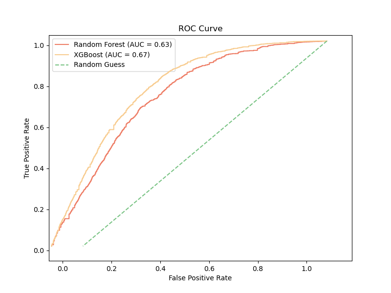

Machine Learning
Executive Summary
In this section, we leverage machine learning to predict community judgments on two advice-seeking subreddits, AmItheAsshole (AITA) and AmIOverreacting (AIO). Using structured feedback labels such as YTA/NTA and OOR/NOR, we trained models to analyze the underlying topical, sentiment, and engagement features driving user responses. Our goal is to uncover whether community judgments can be accurately predicted based on post metadata and derived features, offering insights into the dynamics of online discourse.
To achieve this, we built and evaluated XGBoost and Random Forest models for each subreddit, incorporating key features identified during EDA, including post topics, sentiment scores, and engagement metrics (e.g., post scores and comment counts). These models help us understand not only the accuracy of predictions but also the relative importance of different features in shaping community outcomes.
Key findings reveal that both models perform well in predicting judgments, with Random Forest performing better within AmIOverreacting and XGBoost performing better within AmItheAsshole. Feature importance analysis highlights that post score and the number of comments were among the strongest predictors across both subreddits. For AIO, the enhanced labeling system we developed plays a critical role in generating reliable training data, enabling the model to accurately differentiate between “Overreacting” and “Not Overreacting” posts.
This work demonstrates the power of machine learning in analyzing large-scale social media data, offering practical applications for community moderation and understanding societal trends in judgment and advice-seeking behaviors. The results provide a strong foundation for further exploration of how these platforms shape and reflect public discourse.
Data Preparation and Feature Engineering
To ensure our models effectively predict community judgments on AmItheAsshole (AITA) and AmIOverreacting (AIO), we conducted rigorous data preparation and feature engineering. This process was tailored to capture the key characteristics of each subreddit and ensure high-quality inputs for the machine learning models.
Data Cleaning and Preprocessing
- AITA Labels: The AITA subreddit includes structured feedback labels (YTA, NTA, ESH, etc.) directly from user comments. These labels were cleaned and aggregated to assign a single label per post, representing the majority vote.
- AIO Labels: Since AIO does not always use predefined labels, we created a labeling system that is outlined below:
- Since AIO does not always use predefined labels, we developed a robust labeling system to classify posts as “Overreacting,” “Not Overreacting,” or “Unclear.” This system relies on analyzing the top 10 ranked comments for each post, which were identified based on their engagement scores (e.g., upvotes). By focusing on the most relevant and visible comments, we ensured that the labeling reflected the general sentiment of the community rather than outliers.
- To classify the posts, we implemented keyword matching on the comment text using predefined patterns for each label category. For instance, terms such as “valid reaction” or “not overreacting” were associated with the “Not Overreacting” label, while phrases like “blown out of proportion” or “overreacting” indicated the “Overreacting” label. We also used advanced regex patterns to ensure accuracy by avoiding partial matches or misclassifications (e.g., distinguishing “not overreacting” from “overreacting”).
- Once individual comment labels were generated, a majority vote system was applied across the top 10 comments to determine the final label for each post. If “Not Overreacting” comments outnumbered “Overreacting” comments, the post was labeled as “Not Overreacting,” and vice versa. Posts where neither label achieved a clear majority, or where labels were ambiguous, were classified as “Unclear.”
- This method ensured that labels were derived systematically and consistently, capturing the consensus of the AIO community while minimizing noise from outlier comments. By doing so, we created reliable training data for the machine learning models, enabling accurate predictions of community judgments.
Feature Engineering
Key features for the models were derived from both post content and metadata:
- Post Sentiment Scores: Sentiment scores were calculated using a pre-trained sentiment analysis model, quantifying the emotional tone of each post.
- Post Topics: Topics were extracted using Non-Negative Matrix Factorization (NMF), as detailed in the NLP section. Each post was assigned a dominant topic to incorporate thematic insights.
- Engagement Metrics: Features such as post score, number of comments, and time since posting were included to capture user engagement levels.
- Reddit Metadata: Additional features, such as the day and hour of posting, were included based on trends observed in the EDA.
Data Splits
The datasets for both subreddits were split into training (80%) and test (20%) sets. This division ensures robust evaluation of the models on unseen data while preventing overfitting.
Addressing Imbalanced Data
In both subreddits, labels such as ESH in AITA and “Unclear” in AIO were either ambiguous or underrepresented. Rather than attempting to model these minority classes, we chose to remove them from the dataset. This decision ensured that the machine learning models could focus on clear and well-defined labels, such as YTA and NTA in AITA, and “Overreacting” and “Not Overreacting” in AIO.
By eliminating these ambiguous labels, we streamlined the dataset, improving the clarity and reliability of the training process. This allowed us to focus on patterns and features relevant to the dominant community judgments without introducing noise or complexity from poorly defined categories.
Summary
This data preparation pipeline ensures that the input features capture the thematic, sentimental, and engagement-related nuances of each subreddit. By incorporating sentiment analysis, topic modeling, and metadata, the models are equipped to make informed predictions about community judgments.
AIO Models
Model Overview
To predict community judgments on the AmIOverreacting (AIO) subreddit, we employed two machine learning models: Random Forest and XGBoost. These models were selected for their ability to handle structured data effectively and their robust performance in classification tasks. Both models leveraged features such as post sentiment scores, topics, engagement metrics, and metadata, as outlined in the feature engineering section.
The models aimed to classify posts into two categories: Overreacting and Not Overreacting. The enhanced labeling system discussed earlier provided reliable training data for this task.
Model Performance
The performance of each model was evaluated using standard classification metrics, including precision, recall, F1-score, and accuracy. Below is the classification report for both models, which highlights their respective strengths and weaknesses.
Random Forest Classification Report:
precision recall f1-score support
Not Overreacting 0.67 0.91 0.77 172
Overreacting 0.78 0.43 0.55 134
accuracy 0.70 306
macro avg 0.73 0.67 0.66 306
weighted avg 0.72 0.70 0.67 306
XGBoost Classification Report:
precision recall f1-score support
Not Overreacting 0.69 0.80 0.74 172
Overreacting 0.68 0.54 0.60 134
accuracy 0.69 306
macro avg 0.68 0.67 0.67 306
weighted avg 0.69 0.69 0.68 306
Random Forest Kappa Score: 0.34994746219562345
XGBoost Kappa Score: 0.34766388346065025From the classification reports:
- The Random Forest model achieved higher overall accuracy (70%) compared to XGBoost (69%).
- Random Forest demonstrated strong performance in identifying “Not Overreacting” posts, with a recall of 0.91 and an F1-score of 0.77.
- XGBoost performed more evenly across both labels but struggled with “Overreacting” posts, achieving a recall of only 0.54.
Confusion Matrices
To further analyze the models’ predictions, confusion matrices were generated for both Random Forest and XGBoost. These matrices provide insights into how well each model correctly classified the labels and where misclassifications occurred.
Key observations:
- Random Forest excelled in identifying “Not Overreacting” posts, with only 16 misclassifications out of 172 true examples.
- XGBoost, while slightly less accurate, demonstrated a more balanced approach, with fewer extreme discrepancies between the two labels.
ROC Curve Analysis
The Receiver Operating Characteristic (ROC) curve evaluates the trade-off between the true positive rate (sensitivity) and false positive rate for both models. The AUC (Area Under the Curve) scores provide a comprehensive measure of model performance.
Insights from the ROC analysis:
- The Random Forest model achieved a higher AUC score (0.72) compared to XGBoost (0.68), indicating superior overall performance.
- Both models outperformed random guessing, demonstrating their ability to capture meaningful patterns in the data.
Feature Importance
Feature importance analysis revealed that post score and number of comments were among the strongest predictors for both models. Sentiment scores and post topics also played significant roles, highlighting the importance of combining content, engagement, and metadata features in predicting community judgments.
Summary
The AIO models demonstrate the feasibility of predicting community judgments based on a combination of textual and engagement-related features. While the Random Forest model showed slightly better performance overall, both models provide valuable insights into the factors driving user responses on the AIO subreddit. These findings lay the groundwork for future applications, such as improving content moderation or understanding community dynamics on advice-seeking platforms.
AITA Models
Model Overview
For the AmItheAsshole (AITA) subreddit, we employed Random Forest and XGBoost models to classify posts based on community judgments. Unlike AIO, AITA includes multiple structured feedback labels such as YTA (You’re the Ahole), NTA (Not the Ahole), ESH (Everyone Sucks Here), NAH (No Aholes Here), and INFO (Not Enough Info). However, due to significant imbalances in the distribution of these labels, we focused on the dominant classes, YTA and NTA, for our predictive modeling.
Model Performance
The performance of both models was evaluated using standard classification metrics. Below are the classification reports for Random Forest and XGBoost:
Random Forest Classification Report:
precision recall f1-score support
YTA 0.72 0.52 0.60 7387
NTA 0.59 0.84 0.69 7012
accuracy 0.63 15352
macro avg 0.26 0.27 0.26 15352
weighted avg 0.61 0.63 0.60 15352
XGBoost Classification Report:
precision recall f1-score support
YTA 0.71 0.62 0.66 7387
NTA 0.64 0.81 0.71 7012
accuracy 0.67 15352
macro avg 0.27 0.29 0.27 15352
weighted avg 0.63 0.67 0.64 15352
Random Forest Kappa Score: 0.3125477758880384
XGBoost Kappa Score: 0.37599140374591733Key observations:
- XGBoost outperformed Random Forest with an accuracy of 67% compared to 63%.
- XGBoost demonstrated higher precision for NTA and higher recall for YTA, reflecting a balanced performance.
Confusion Matrices
The confusion matrices below provide a detailed look at the distribution of predictions for both models:
Key observations:
- Random Forest had difficulty predicting YTA, with a relatively high number of false negatives misclassified as NTA.
- XGBoost improved on this by capturing more correct YTA classifications while maintaining strong performance on NTA predictions.
ROC Curve Analysis
The ROC curves highlight the models’ ability to balance sensitivity and specificity:

Insights from the ROC analysis:
- XGBoost achieved a higher AUC score (0.67) compared to Random Forest (0.63), indicating better overall performance.
- Both models performed well above the random baseline, demonstrating their ability to leverage meaningful patterns in the data.
Feature Importance
Feature importance analysis revealed that post score, number of comments, and sentiment score were the most significant predictors across both models. This aligns with earlier findings in EDA and NLP, where these features were identified as key drivers of community engagement.
Summary
The AITA models underscore the potential for machine learning to predict community judgments in multi-label settings. While XGBoost emerged as the better-performing model, both models highlighted key features influencing user responses. Future work could focus on handling of underrepresented labels and exploring advanced techniques such as multi-label classification.
Conclusion
Our project demonstrates the feasibility and value of leveraging machine learning to analyze and predict community judgments across advice-seeking platforms. Through a combination of EDA, NLP, and ML, we have uncovered key insights into user behaviors, thematic trends, and judgment patterns in modern online subreddits
Key Findings:
- AIO Results:
- Random Forest performed slightly better in predicting “Overreacting” and “Not Overreacting” judgments, with an accuracy of 70%.
- Post score and comment count emerged as the most influential predictors, emphasizing the role of engagement metrics.
- AITA Results:
- XGBoost outperformed Random Forest, achieving 67% accuracy for the labels (YTA and NTA).
- Post score, comment count, and sentiment score were the most influential predictors.
Next Steps:
- Model Improvements:
- Experiment with advanced NLP techniques, such as transformers, to capture deeper contextual relationships in post text.
- Address label imbalance by incorporating oversampling techniques or alternative loss functions.
- Expanded Analysis:
- Extend the dataset to include additional subreddits and external advice-seeking platforms for broader generalization.
- Analyze temporal trends in judgment patterns to identify shifts in societal norms.
By bridging traditional and modern advice-seeking platforms, this project lays the groundwork for understanding the evolving dynamics of digital discourse and its implications for societal trends.